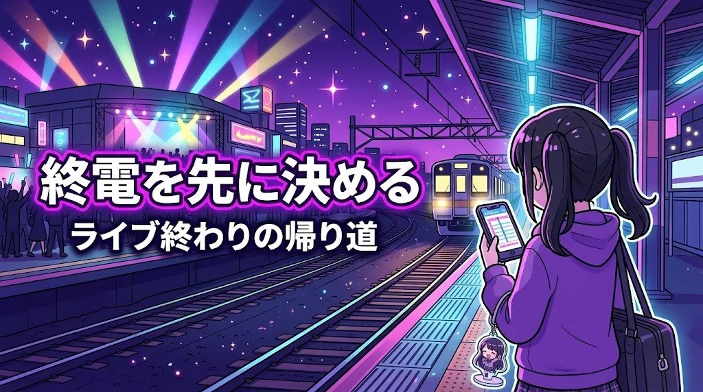
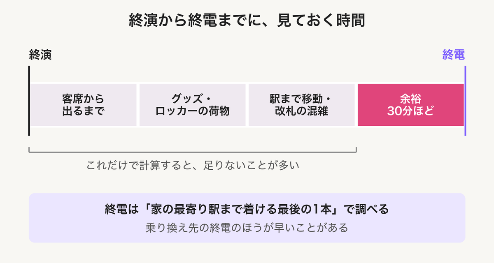
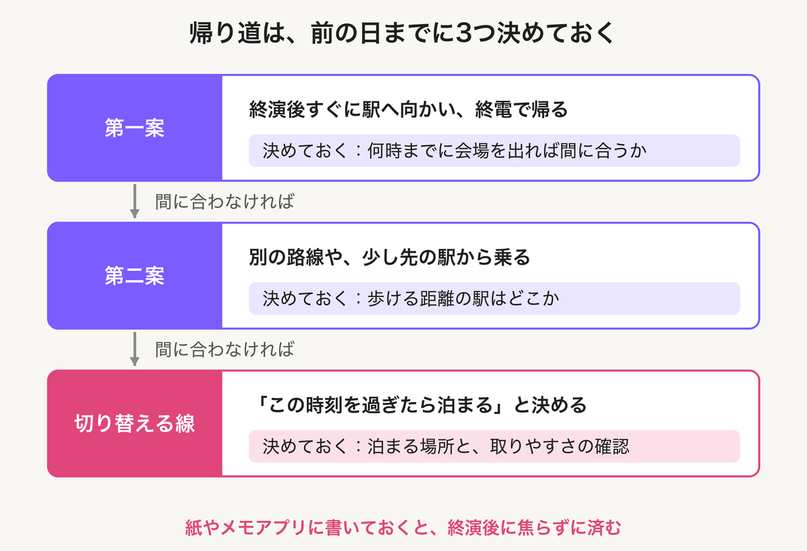

ライブ 終電 間に合わない｜帰り道を先に決めておく4つのコツと、宿に切り替える目安
※この記事はプロモーション（広告）を含みます

ライブが終わった瞬間、「あれ、終電まであと何分だっけ」と時計を見て、焦ったことはありませんか。
結論は、帰り道は、開演前に「第一案・第二案・宿に切り替える線」の3つを決めておくことです。決めてあれば、当日の迷いが減って、ライブの余韻を大事にできます。この記事では、その決め方を4つのコツで紹介します。
この記事でわかること： 終電の確認のしかた、終演後に間に合わせるための動き方、間に合わないと分かったときの切り替え方。結論は、「間に合わなければ泊まる」と先に決めておくと、気持ちが楽になることです。
コツ1｜終電の時刻は「会場の最寄り駅」ではなく「家の最寄り駅まで」で見る
終電を調べるとき、会場の最寄り駅の最終の電車だけを見て安心してしまうことがあります。実際に必要なのは、家の最寄り駅まで着ける最後の1本です。乗り換えがあると、乗り換え先の終電のほうが早いことがあるためです。
- 乗り換えアプリで、「終電」を指定して、家までの最終の便を調べる
- 乗り換えが必要な駅の、接続の時刻も確認する
- 平日と休日で、終電の時刻が違うことがあるので、当日の曜日で調べる
時刻は、ダイヤの改正で変わることがあります。出発の前日と当日の朝に、もう一度見直してください。
コツ2｜終演の時刻は「余裕を持って」見積もる
終演の時刻は、公演によって違い、延びることもあります。公式のお知らせに目安が出ている場合は、それを参考にします。目安がないときは、過去の同じ会場の公演の様子を、公式のお知らせやファンの方の情報から、あくまで参考として見ておきます。
終演してから駅に着くまでには、次の時間がかかります。
- 客席から出るまでの待ち時間（出口が混み合うため）
- グッズやロッカーの荷物を受け取る時間
- 駅までの移動と、改札の混雑での待ち時間
「終演の時刻 + 駅までの移動」だけで計算すると、足りないことが多いです。余裕の分を、あらかじめ30分ほど見ておくと安心です。

また、アンコールが長くなる日もあります。「この曲が終わったら出る」と、あらかじめ自分の中で最後の合図を決めておくと、名残惜しさに流されずに済みます。推しの最後の姿を見届けたい気持ちと、帰り道の安全のどちらも大切にできる、小さな決めごとです。
コツ3｜第一案・第二案・宿に切り替える線を決める
次の3つを、前の日までに決めて、メモに書いておきます。
| 順番 | 内容 | 決めておくこと |
|---|---|---|
| 第一案 | 終演後すぐに駅へ向かい、終電で帰る | 何時までに会場を出れば間に合うか |
| 第二案 | 別の路線や、少し先の駅から乗る | 歩ける距離の駅はどこか |
| 切り替える線 | 「この時刻を過ぎたら泊まる」と決める | 泊まる場所と、取りやすさの確認 |
「切り替える線」を決めておくと、終演後に焦って走らなくて済みます。走って帰るより、泊まって翌朝ゆっくり帰るほうが、体も気持ちも守れます。

コツ4｜泊まる場合の備えは、先に調べておく
宿は、ライブの日が近づくと、会場の近くから埋まりやすくなります。泊まる可能性があるなら、次の備えをしておきます。
- キャンセル無料の期限のある宿を、仮で押さえておく（期限と条件は、予約の画面で確かめる）
- 荷物は、コインロッカーや宿の預かりを使って身軽にする。やり方は遠征の荷物が多いときのコインロッカーと宿の預かりにまとめています
- 予約の仕組みは、ホテルの予約とキャンセルの規定の見かたも参考になります
こんな声をよく聞きます。「終電に間に合わないと分かったら、急に疲れが出た」。先に宿の候補を決めてあれば、そのときの選択が、とても楽になります。
向かない人・注意点
- 終電の時刻や、深夜バスの運行は、変わることがあります。執筆時点の内容ですので、必ず乗り換えアプリや、各社の公式の案内で当日に確かめてください
- 未成年の方は、帰りの手段や時刻について、保護者の方と先に相談してください
- 夜遅い時間の一人歩きは、周りの様子に気を配り、明るく人通りのある道を選んでください
- 会場や主催者が、終演後の退場の案内を出している場合は、その指示に従ってください
私も最初は、終電の時刻だけを見て、終演後の動き方まで決めていなかった、というつまずき方をしました。一般的にも、帰り道を決めずに会場へ向かい、終演後に慌ててしまう方は少なくありません。
まとめ
| 順番 | やること | 一言 |
|---|---|---|
| 1 | 家の最寄り駅までの終電を調べる | 乗り換えの接続も見る |
| 2 | 終演後の移動に、30分の余裕を見る | 出口の混雑を計算に入れる |
| 3 | 第一案・第二案・切り替える線を決める | 紙にメモする |
| 4 | 泊まる場合の宿を、先に調べておく | キャンセルの条件を確かめる |
ライブを作っている方々と、帰り道の心配をしながらも会場へ向かう、あなたの気持ちに、ありがとうございます。
まずは、次のライブの日の「この時刻を過ぎたら泊まる」を、メモアプリに1行だけ書いてみませんか。
あなたは、終演後、何時までに会場を出れば、気持ちよく帰れそうですか？
最後まで読んでくださり、ありがとうございました。
次の推し活に向けて、今日できることを1つだけ。持ち物を1つ用意する、予定を手帳に書くなど、小さな準備から始めてみませんか。
あなたは次に、どの現場へ行きますか？
この記事は下書きにAIを使い、内容は運営者が公式情報で確認しています。画像はAIで作成したイメージです。